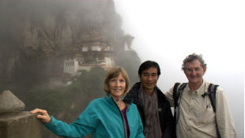

Worldviews 2000 Trips began nine years ago, when friends asked me to lead them to visit Southeast Asia, where I had worked for years, most recently as Peace Corps Country Director for Thailand. Since then I have led over twenty trips, including to Thailand, Laos, Vietnam, Kampuchea, Myanmar (Burma), Malaysia, Indonesia, and Singapore. I have also welcomed travelers to the unique U.S. state of New Mexico. In 2010 my wife, Nancy, and I led our first group to Bhutan; in Oct. 2013, we will lead our fifth trip there.
I have been invited to lead large groups in Southeast Asia, but have chosen to organize my own trips, and to keep them to 8-11 people in order to deepen the experience for all. To this end, I emphasize travel to places where Nancy and I know wonderful local people who can share who they are and what is important to them about their community and natural environment. We want to give back as we travel, so a portion of each trip fee is set aside to donate to social welfare and development causes that the group selects as we go.
I lead 2-4 trips per year. In planning each trip, I seek to combine some of the highlights of past trips with a new locale or set of activities, so that each trip is fresh.
I seek spontaneous opportunities, too, as we travel along. For example, last year our group attended Lao Hmong New Year in Luang Prabang, Laos. Great as the celebration was, I was sorry to miss the Hmong pan pipes (“khaen”) performance that is usually a part of the festivities. But the next day, as we drove through the hills of Laos, we spotted a Hmong man and his daughter walking to his village carrying his pan pipe. We stopped the bus, asked for a song and were treated to a spontaneous roadside concert! And what a treat it was to give the khaen player’s daughter some of the Laos children’s books that we had purchased for such occasions from the Big Brother Mouse book project bigbrothermouse.com
Prior to each trip I ask each person about his or her interests and what will make the trip special for him or her, and then try to make this happen. And, in addition to the planned group activities, all are welcome to join Nancy and me for early morning photography, silent meditation/reflection, and Chi Kung exercise and, any time of day, for market searches for beautiful weavings and other handicrafts and for local food delicacies! As we travel, I seek to present anthropological and other perspectives on what we are experiencing.
Assisting travelers and local people to connect in lighthearted, non-threatening ways is a delight. I seek opportunities for us to observe, to participate with local hosts, to discuss together in our group. and to provide individual time and space. My hope is that we all will deepen through experiencing new ways of seeing and being and, through doing so, sustain and improve our world.
Brief Biography of Roger Harmon.
I was trained as a secondary school teacher and in my early work years taught as a Peace Corps Volunteer in Malawi, Africa, at the International School of Bangkok, and then taught at and directed a bi-national language learning center in Savannaket, Laos. I returned to the U.S. and completed a Ph.D. in cultural anthropology at the University of Washington, using fieldwork on Buddhism and social change conducted in Thailand from 1972-4. Fortunately, my career path was to be in applied anthropology: I worked for 15 years in refugee resettlement and education in Washington State, then in Washington D.C. and finally in Southeast Asian refugee camps in Indonesia, the Philippines and Thailand with the U.S. State Department-funded education programs for refugees bound for the United States. From 1995-1999 I facilitated various training activities for Peace Corps, including leading Pre-service Trainings in Thailand, Eritrea, and Kyrgyzstan. From 2000-2002, I was Director of the U.S. Peace Corps for Thailand. I speak good Thai and passable Lao languages.
While in Thailand, Nancy and I hosted many guests and enjoyed showing them around. In 2004 I began Worldviews 2000 Trips, based in New Mexico, and in 2008 established Roger Harmon, Limited Liability Company (LLC).
Current interests in addition to leading trips are photography; assisting my wife, Nancy, in supporting her vital, but aging parents; deepening through meditation, Chi Kung, aerobic walks with Nancy and our dog, Salsa; and, seeking connection within, between and among.
Nancy joins me on about half of the trips. She recently retired from teaching English, English as a Second Language, media literacy and service learning in a number of multi-cultural settings, including the Navajo reservation. Nancy spent her Junior Year Abroad in Beruit, Lebanon, and upon college graduation returned to Lebanon as a volunteer teacher for two years. She currently does volunteer English teaching with a newly-arrived refugee family from Iraq. Nancy has recently partnered with another educator to start a non-profit to provide innovative curriculum materials that focus on global issues http://www.global-awareness.org
"In the beginnegr's mind there are many possibilities, but in the expert's there are few." Shunryu Suzuki in Beginner’s Mind.


{kind=link}
{kind=link}
{kind=link}